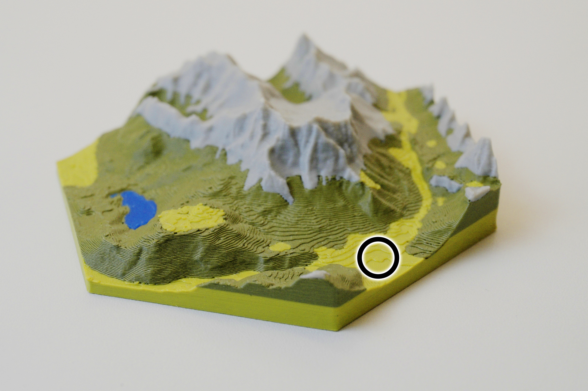
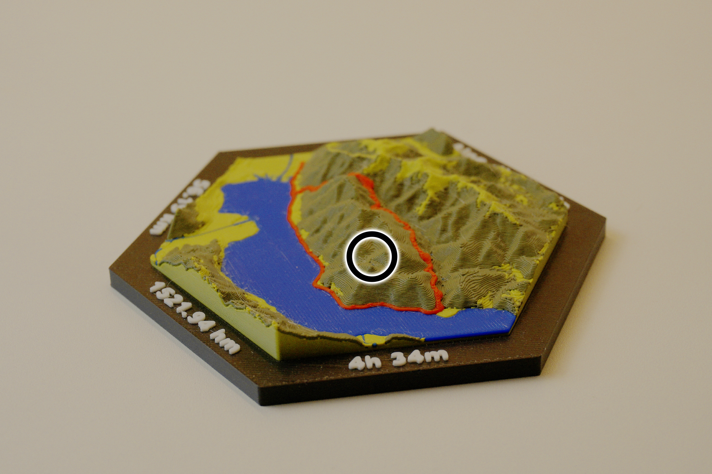
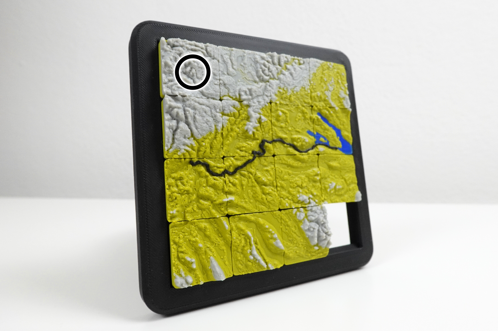
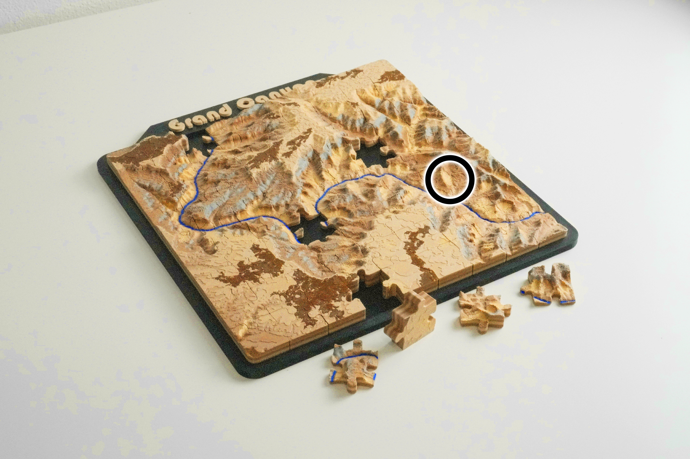

Gear Guide
Every filament on this page has been tested on real map prints. Links are affiliate. they cost you nothing extra and help support the project.


Also called Olivegreen but a much darker shade. I use it for Forests
Buy on Amazon
I use this Gray for Mountains and Rocks. On City Maps i use it for Roads
Buy on Amazon
Perfect rock texture for desert style maps and canyons
Buy on AmazonAffiliate disclosure: links on this page may earn a small commission at no extra cost to you. I only recommend filaments I have personally printed maps with.